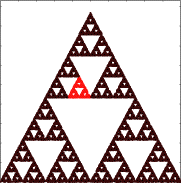
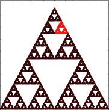
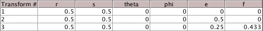

|  |  | |
| (a) | (b) |
| 4. Here is the standard table for generating the equilateral gasket. | ||||||
|  | ||||||
| Find changes to T3 making each of the shaded regions have address 321. Explain how you arrived at your answer. | ||||||
| ||||||
| Here are the answers. |
Return to Address Lab Exercises.